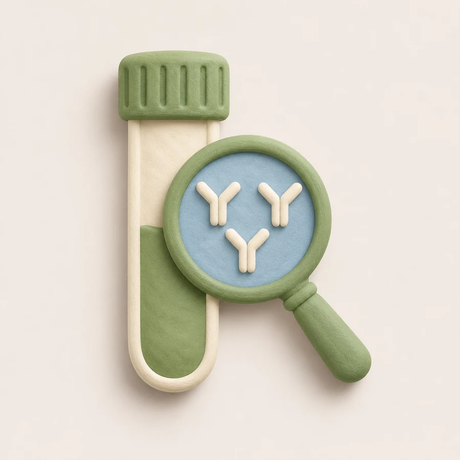
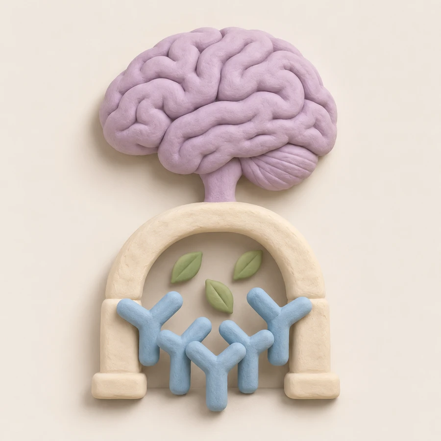

24/7 Available
Doorstep pickup in about 60 min (eligible areas), 24/7, including night slots.
Limited-time offer
Book a home sample collection with doorstep pickup.
₹12,999 ₹25,000 Save 48%No surprises in pricing
The FRAT test (also known as the folate receptor autoantibody test) helps assess conditions linked to impaired folate metabolism. It may be used in pregnancy care and developmental evaluations. It is not a standalone test for autism.
What it does


Where it helps


Home sample pickup
Book a home sample collection for your FRAT test and skip the lab visit.
Doorstep pickup in about 60 min (eligible areas), 24/7, including night slots.
Some tests report faster; AI explains your report in everyday English.
Trained phlebotomists, sealed FRAT test kits, secure app delivery, and clear pricing (no surprises).
Book home collectionYoda Conclave

Prefer YouTube? Watch it there
Mr. Yoda's Club
Member prices shown for Mr. Yoda's Club.
What's inside
Reports within 3-5 Weeks
Mr Yoda's Club Member price
₹ 999
₹ 26,999
What's inside
Reports within 2-4 Days
Mr Yoda's Club Member price
₹ 999
₹ 3,000
What's inside
Reports within Same Day
Mr Yoda's Club Member price
₹ 999
₹ 2,000
FAQ
The FRAT test (folate receptor autoantibody test) is a blood-based test that screens both blocking and binding autoantibodies, which may affect folate transport to the brain and CSF.
If you are searching for FRAT test near me, you can book Mr. Yoda's FRAT test in Hyderabad and opt for blood sample home collection or order a FRAT test kit if you are ordering from elsewhere in India.
A positive FRAT blood test means impaired folate transport. Consult a doctor for treatment, supplements, and follow-up under infertility blood tests for women or neuro care.
The FRAT test helps detect hidden folate issues linked to autism, fertility concerns, and developmental delays, thereby enabling early, preventive intervention.
The FRAT test is recommended for women facing fertility issues, pregnancy loss, or children with autism or developmental delays.
Still have questions? Speak with a doctor before making decisions about testing or treatment.